Reading a schematic, hovering to probe, bus anatomy, selection, and the no-wire viewing mode.
The canvas is a real schematic, not a block diagram. Chips are drawn as DIP outlines with the notch
at pin 1, pins on the sides the datasheet puts them, and active-low names carrying overbars. Zoom in far
enough and pin numbers appear; zoom in further and every label is legible.
Wheel to zoom (about the pointer), drag empty space to pan, and hold Alt to pan even over
a chip. Click a pin, then another pin, to wire them. Hold Shift while clicking a pin and the
entire numbered family goes across as one bus.
Reading a schematic
Everything on screen is drawn from the netlist you built — there is no
picture file anywhere. Chip bodies scale with their pin count, and a max-mode CPU even relabels its
dual-function pins (~DEN becomes ~S0) the moment you strap
MN/~MX low.
The whole board — Chips are drawn as real DIP outlines with the notch at pin 1 and pins on the sides the datasheet puts them.
Zooming
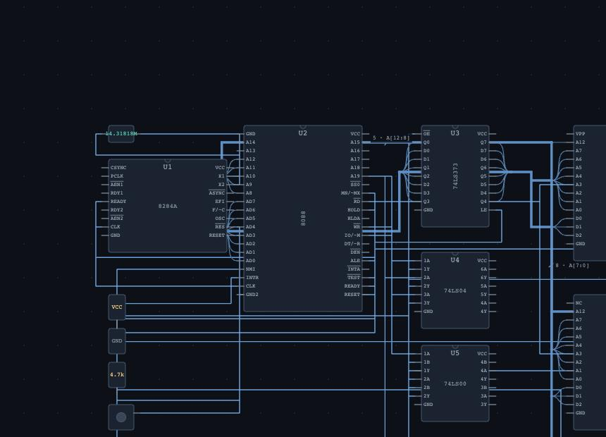
Zoom 1× — Zoomed out, the board reads as a floorplan.
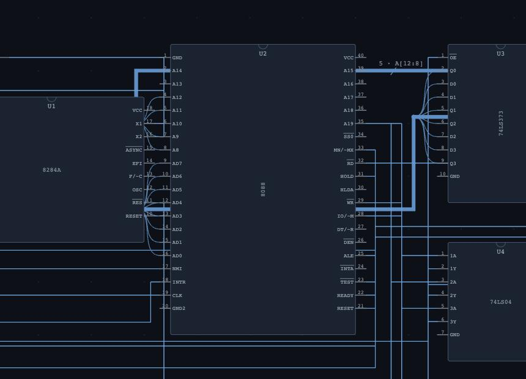
Zoom 1.8× — Zoomed out, the board reads as a floorplan.
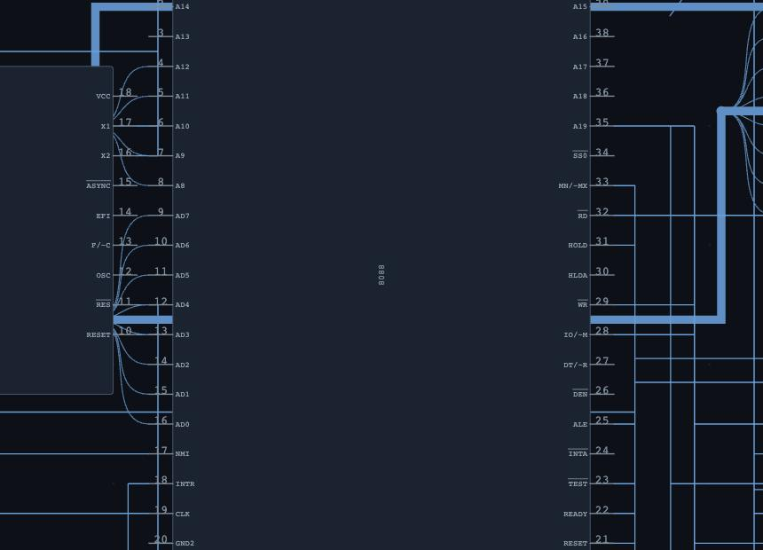
Zoom 2.8× — Pin names appear as you zoom in.
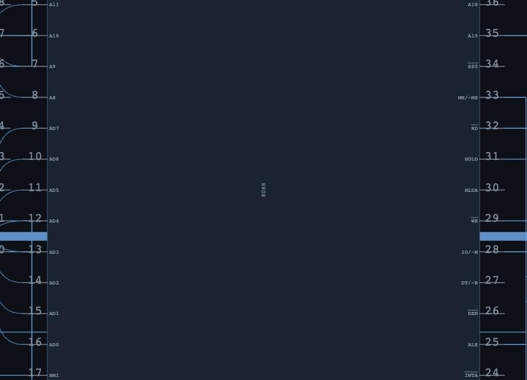
Zoom 4.2× — At high zoom, pin numbers appear alongside the names and active-low pins carry overbars.Zoom 6× — At high zoom, pin numbers appear alongside the names and active-low pins carry overbars.
Hovering
Hovering is the primary way to answer "what is this connected to?". Hover any pin and
you get its number and kind, the name of its net, the live logic value, and the full membership of the
net. At the same time every pin on that net glows, so the signal's reach is visible at a glance.
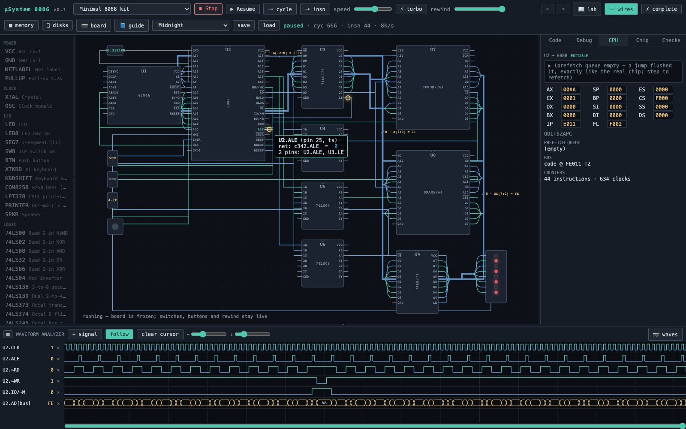
Probing ALE — Hovering ALE names the pin, gives its number and kind, identifies its net, shows the live logic level, and lists every other pin on that net — while the whole net glows on the canvas.
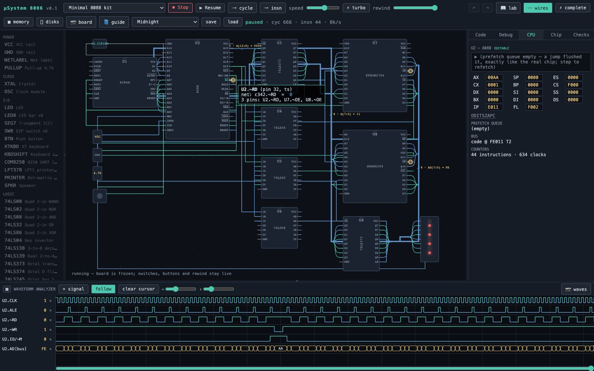
Probing ~RD — Hovering ~RD names the pin, gives its number and kind, identifies its net, shows the live logic level, and lists every other pin on that net — while the whole net glows on the canvas.
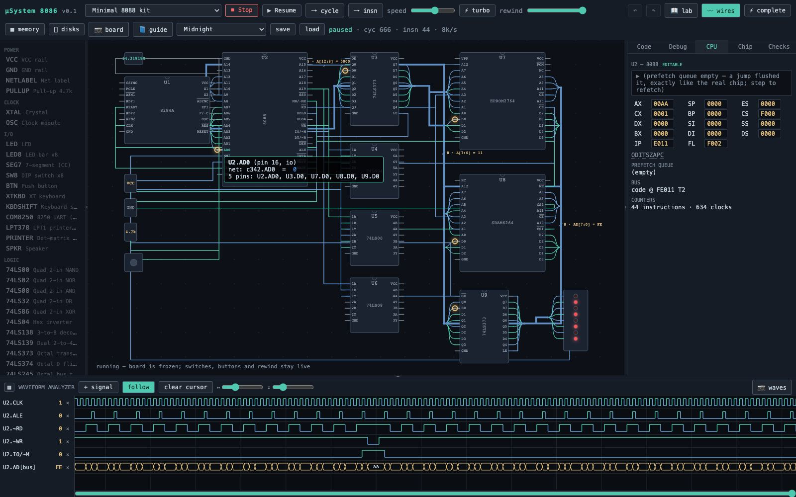
Probing AD0 — Hovering AD0 names the pin, gives its number and kind, identifies its net, shows the live logic level, and lists every other pin on that net — while the whole net glows on the canvas.
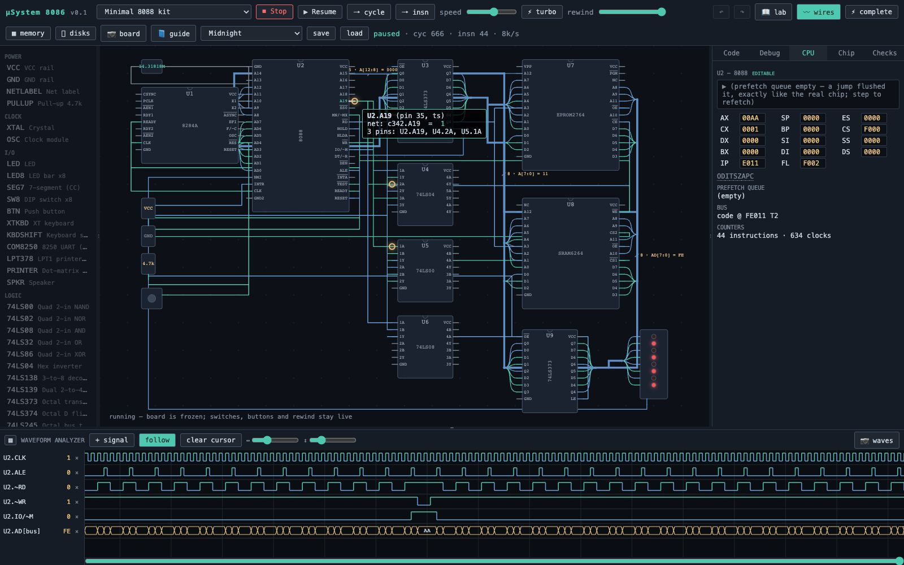
Probing A19 — Hovering A19 names the pin, gives its number and kind, identifies its net, shows the live logic level, and lists every other pin on that net — while the whole net glows on the canvas.
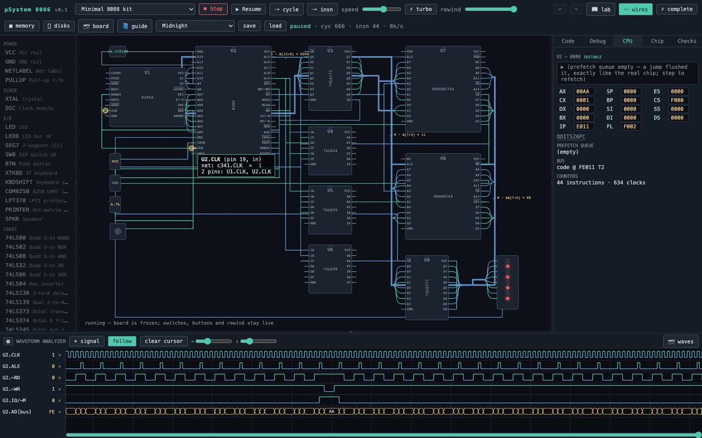
Probing CLK — Hovering CLK names the pin, gives its number and kind, identifies its net, shows the live logic level, and lists every other pin on that net — while the whole net glows on the canvas.Probing READY — Hovering READY names the pin, gives its number and kind, identifies its net, shows the live logic level, and lists every other pin on that net — while the whole net glows on the canvas.
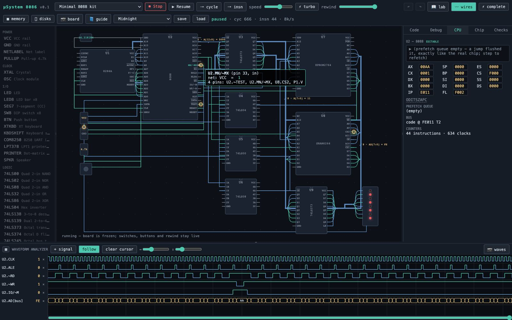
Probing MN/~MX — Hovering MN/~MX names the pin, gives its number and kind, identifies its net, shows the live logic level, and lists every other pin on that net — while the whole net glows on the canvas.Probing IO/~M — Hovering IO/~M names the pin, gives its number and kind, identifies its net, shows the live logic level, and lists every other pin on that net — while the whole net glows on the canvas.
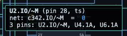
The probe tooltip — Net name, live value, and the full membership of the net — the fastest way to answer "what is this actually connected to?"
Bus anatomy
Buses are drawn the way a draughtsman draws them. Individual pins leave on curved
leads, gather at a tap a short distance off the chip body, run as a single straight trunk with sharp
mitred corners, and fan back out at the far end. The router scores candidate paths against chip bodies
it would cross and lanes other buses already took, so trunks separate instead of overlapping.
When a trunk is long enough and you are zoomed in, it carries a classic slash label:
16 · AD[15:0] = 3F2A — the width, the bus name, and the live value at that instant.
Buses drawn like a schematic — Pins fan out on curved leads, gather at a tap, run as one straight trunk with mitred corners, then fan back out at the far end.
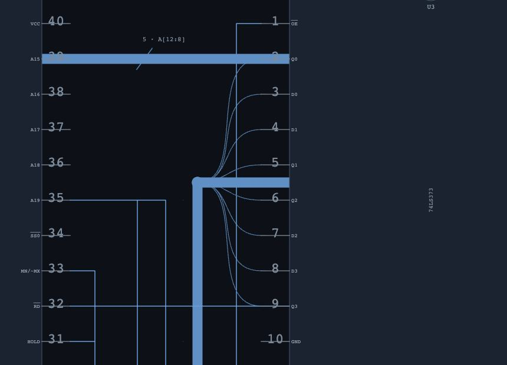
Fan-out at the 74LS373 — Eight leads curve out of the trunk into the latch's D inputs — you can follow any single bit by eye.
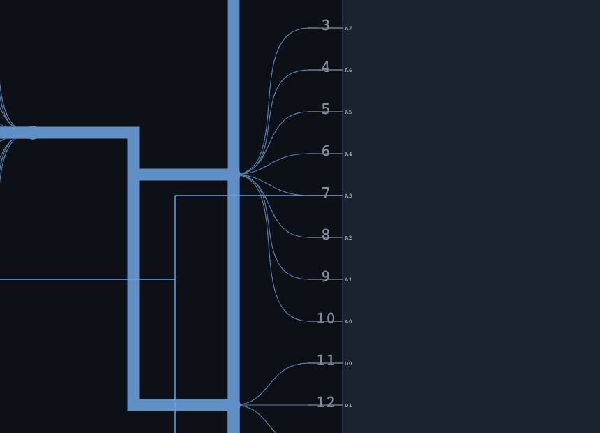
Fan-out at the EPROM2764 — The same bundle arrives at the ROM and disperses into its address pins.
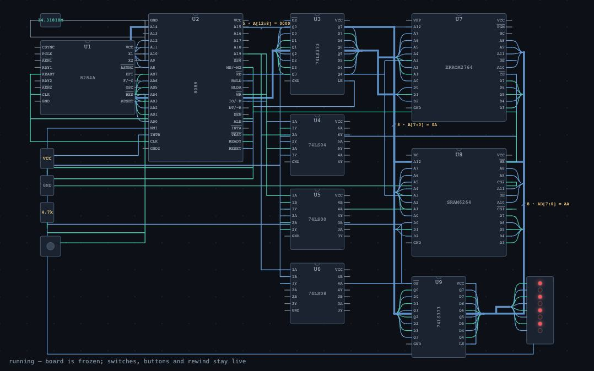
Slash labels carry live values — Each trunk is tagged with its width, its name and its current hex value: 8 · AD[7:0] = 5A.
Selecting and editing
Click selects; Delete removes. Right-click is a two-stage
delete — the first right-click selects, the second on the same target deletes — so nothing disappears
by accident. Selecting one lead of a bus selects the whole bundle.
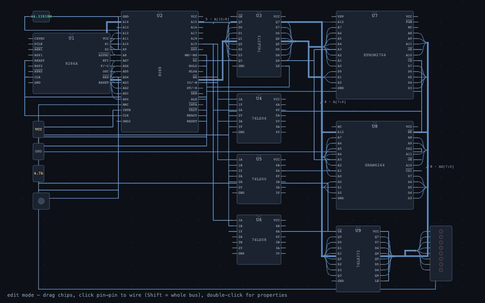
Selected component — Click a chip to select it. Delete removes it and every wire attached to it; right-clicking it twice does the same.
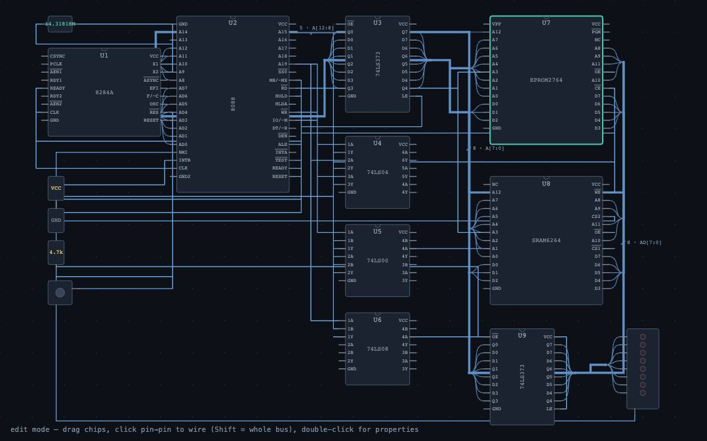
Selecting a memory — Selection also drives the Chip panel, which shows internal state and live pin values.
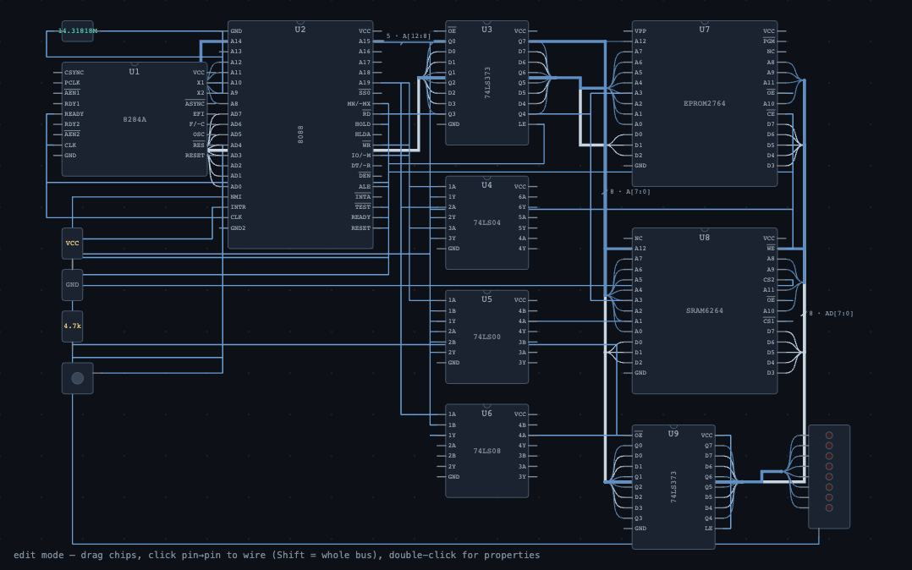
Selected bus — Selecting one lead of a bus selects the whole bundle, so an eight-bit bus is deleted or moved as a unit.
No-wire mode
〰 wires hides every wire while leaving the netlist untouched. On a
dense board this is the difference between a readable schematic and spaghetti. Click any chip while
wires are hidden and only that chip's connections are drawn.
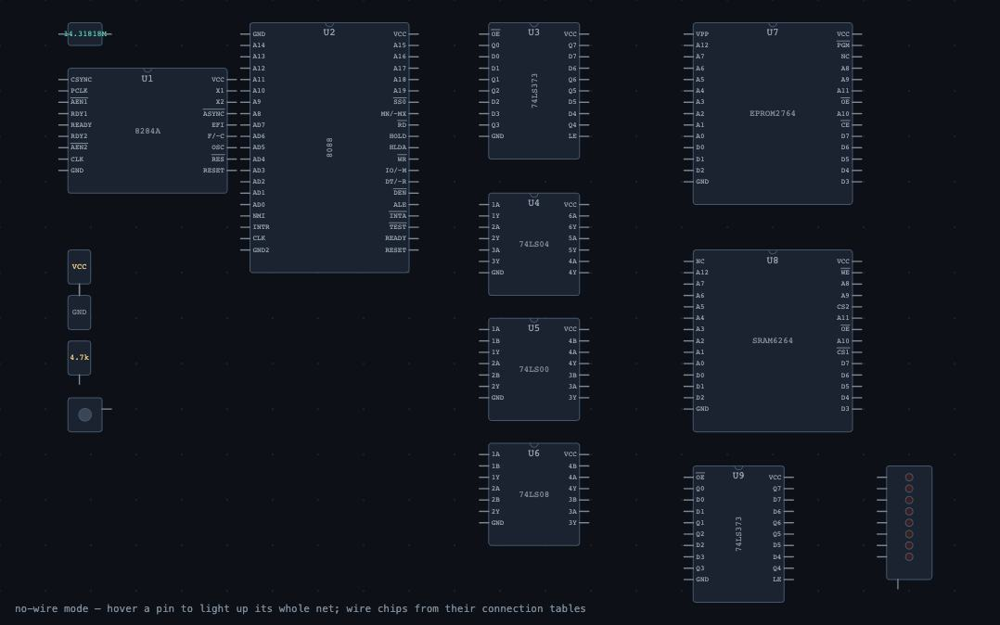
Wires hidden, netlist intact — 〰 wires hides every wire. Nothing about the design changes — this is a reading mode for dense boards.What the hint bar says — In no-wire mode the hint bar reminds you that hovering a pin still lights its whole net.
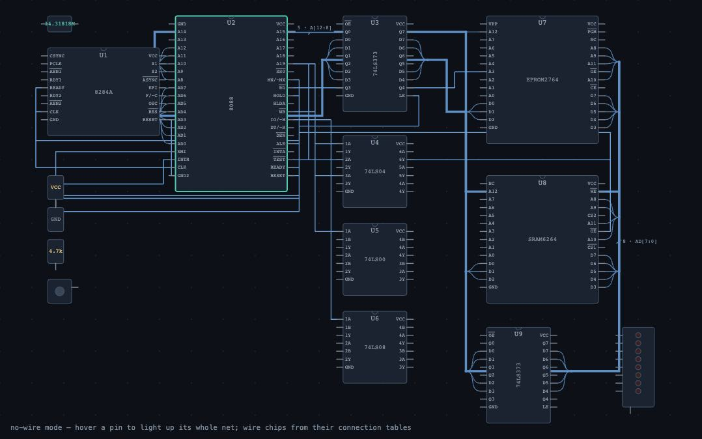
Only the 8088's wires — Click any chip while wires are hidden and only that chip's connections are drawn — the cleanest way to trace one device at a time.
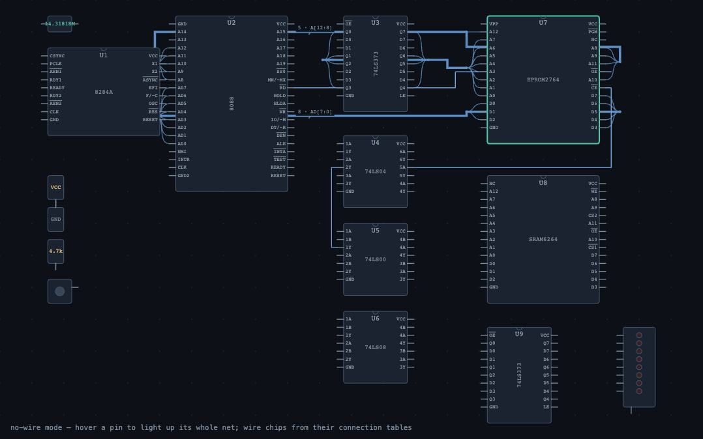
Only the EPROM2764's wires — Click any chip while wires are hidden and only that chip's connections are drawn — the cleanest way to trace one device at a time.
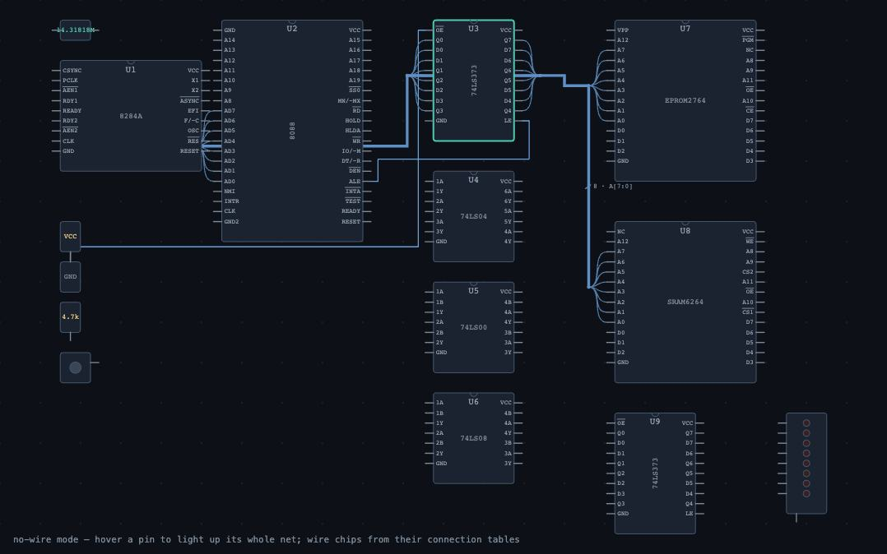
Only the 74LS373's wires — Click any chip while wires are hidden and only that chip's connections are drawn — the cleanest way to trace one device at a time.
Placing parts
Click a part in the library, then click the canvas. The moment it lands, the
autowiring planner looks at the whole board and decides whether it can offer you something — see
Autowiring.
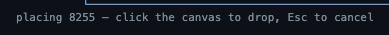
Placing a part — Pick a part in the library and the hint bar tells you what happens next; click the canvas to drop it on the grid.